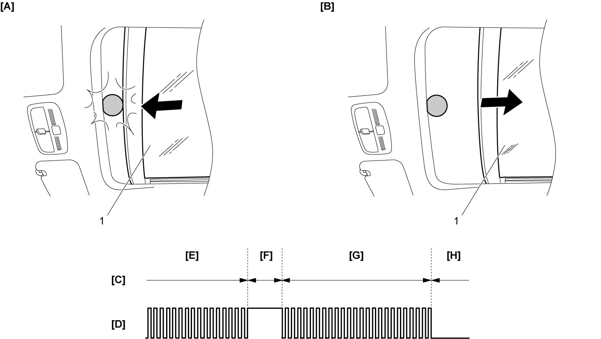

9I
| Description of Anti-Pinching Function |
Sun roof system is provided with an anti-pinching function which works at closing operation of the sun roof glass (1) or sunshade (1).
Reverse Operation Stroke of Anti-Pinching Function
•Anti-pinching function of the sun roof glass and sunshade works only in auto sliding mode in closing direction. When a pinching load exceeding the preset value is applied to the auto-slide-closing sun roof glass or auto-slide-closing sunshade, it reverses the sun roof glass or sunshade by approx. 125 mm (4.92 in.).
Operating range in auto sliding mode of the sun roof glass or sunshade is from fully opened position to 125 mm (4.92 in.) closed position. In this operating range, anti-pinching function works to fully reverse the sun roof glass or sunshade when a pinching load exceeding the preset value is applied to the auto-slide-closing sun roof glass or sunshade.
•Anti-pinching function of the sun roof glass works only in auto tilt-down mode and reverses the sun roof glass to fully tilt-up position when a pinching load exceeding the preset value is applied to the auto tilt-down sun roof glass.
Operating range in auto sliding mode of the sun roof glass or sunshade is from fully opened position to 125 mm (4.92 in.) closed position. In this operating range, anti-pinching function works to fully reverse the sun roof glass or sunshade when a pinching load exceeding the preset value is applied to the auto-slide-closing sun roof glass or sunshade.
•Anti-pinching function of the sun roof glass works only in auto tilt-down mode and reverses the sun roof glass to fully tilt-up position when a pinching load exceeding the preset value is applied to the auto tilt-down sun roof glass.

 "Expand image")
| [A]: | Pinching some object (during auto closing) | [D]: | Pulse signal | [G]: | Auto reverse (about 125 mm (4.92 in.)) |
| [B]: | Auto reverse | [E]: | Closing | [H]: | Stopping |
| [C]: | Sun roof glass or sunshade | [F]: | Pinching |
Sun Roof Fail-Safe Function
The control module in sun roof motor (for sun roof glass) stops auto-sliding and auto-tilting.
Fail-safe condition
Sensor pulse count exceeds memorized MAX position data.
There is no signal from one sensor while there is signal from another sensor.
Fail-safe cancel condition
Initialization of sun roof motor is completed.